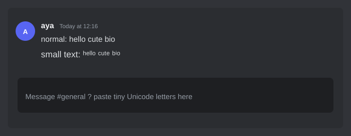

How to make Discord text small
Quick answer: Discord cannot shrink letters with markdown. Type a word in the small text generator, copy a style, and paste it into chat or your nickname. The result looks like ʰᵉˡˡᵒ.
People search “how to make small text in Discord” because *italic* and **bold** do not make type tiny. This guide covers chat, nicknames, and why Unicode paste is the method that actually works.
How to make small text in Discord (chat)
- Open the small text generator.
- Type the message, joke, or username you want (example:
hello). - Choose a style. Tiny is the usual Discord look. Small Caps is louder.
- Click Copy on that row.
- In Discord, click the message box, paste, and send.

The same paste works in Discord desktop, the browser app, and mobile. If paste looks empty, the server or client may have stripped unusual characters — try a shorter word first.
How to make a small text Discord nickname
- Generate the name in the small text generator.
- Watch the Discord nickname counter on that page (32 characters).
- Copy the style, then in Discord go to Edit Server Profile (or user settings for your global name) and paste.
Tiny letters still count as one character each, but a long aesthetic name can hit the 32-character cap faster than you expect. Keep it short. Server nicknames can differ from your global display name.
Discord markdown vs small text
Official Discord formatting is listed in Discord’s Markdown Text 101. It does not include a “make this smaller” code.
| You type | What Discord does | Use it for |
|---|---|---|
*hello* | italic | Emphasis |
**hello** | bold | Emphasis |
||hello|| | spoiler | Hide a line |
`hello` | inline code | Commands |
| ʰᵉˡˡᵒ (paste) | tiny letters | Aesthetic chat / nick |
If you need chemistry (H₂O) or an exponent (x²) in Discord, that is not small text. Use the subscript generator or the superscript generator, then paste. Ready Instagram-style strings (not Discord-only) live on small text copy paste.
Small text Discord examples
| Type this | Tiny paste | Where it fits |
|---|---|---|
hello | ʰᵉˡˡᵒ | Chat |
cute | ᶜᵘᵗᵉ | Reply / status |
bio | ᵇⁱᵒ | About me |
afk | ᵃᶠᵏ | Nickname tag |
Want a full word that is not in the table? Generate it. Do not retype tiny letters by hand — missing glyphs are easy to miss.
What does not work
- Missing letters. Some Latin letters have no tiny Unicode form (q is a common gap). The generator leaves those letters normal instead of inserting a box.
- Search and mentions. People cannot always @mention a tiny nickname the way they type a normal name.
- Screen readers. Tiny letters may be read as separate phonetic characters. Skip them in serious announcements.
- Server rules. Some communities ban decorative names. Check the rules before you change a nick.
Related guides
- Small text generator (live tool — pillar)
- Small text copy paste (Instagram / TikTok examples)
- Markdown subscript and superscript
- Paste in WhatsApp
- Subscript vs superscript
- All guides
FAQ: small text in Discord
How do you make text small in Discord?
Paste Unicode tiny letters. There is no /small command and no markdown for size.
How do I make Discord text small on mobile?
Same steps. Generate on your phone, copy, open Discord, long-press the box, paste.
Can I make only part of a message small?
Yes. Type the normal words in Discord, then paste the tiny word where you want it.
Is this the same as Discord subscript?
No. Subscript is H₂O-style. Small text is a tiny alphabet for bios and jokes.